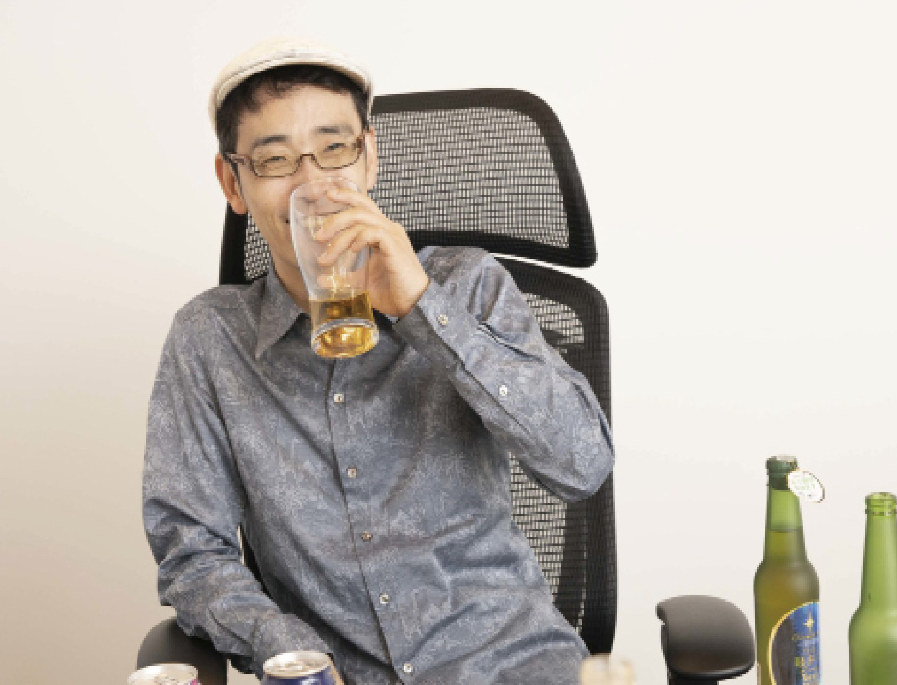
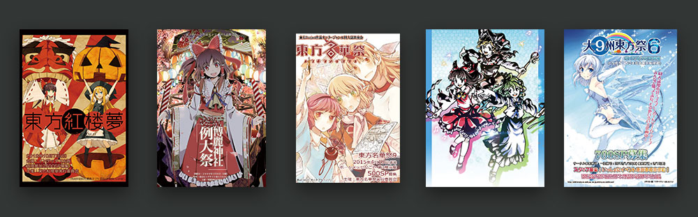
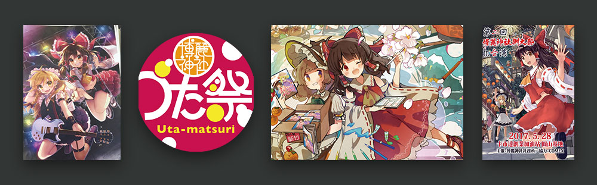

东方Project文化概述

什么是东方
东方Project 日文：東方Project 英文：Touhou Project 简称：东方
东方是日本同人社团上海爱丽丝幻乐团（下文中简称为「官方」）所制作的一系列同人游戏、相关作品，以及基于前者由爱好者所创作的二次创作所共同构成的覆盖游戏，动漫，音乐，文学等诸多方面的横跨同人与商业的广泛领域。
在部分厂商（如索尼与任天堂）将东方Project相关内容引进到中文圈内时，会使用「东方计划」这个名称。
概述
一言蔽之，东方Project的世界是由官方作品，与粉丝或其他非官方组织自发创作的作品所共同构成的。
官方作品又称之为原作，其中产生的设定内容被称为「一次设定」；
非官方的作品又称之为二次创作，其中产生的设定内容被称为「二次设定」。
官方作品以游戏为主，书籍、音乐为辅。其种类多样，设定丰富，角色繁多，剧情详实又不失悬念。
一般情况下，官方除了指代上海爱丽丝幻乐团外，也指代东方的原作者、上海爱丽丝幻乐团的主催博丽神主ZUN本人。
东方的官方剧情主要发生在一个相对于我们这个现实世界独立却又相互联系的异世界之中，它的名字叫「幻想乡」。
幻想乡被结界所包围，构成了一个独特的生态系统。与现实世界不同的是，幻想乡其中除了人类，还生活着许多妖怪、神明等非人类的存在。
这些官方作品所构建的东方世界观，是一切的基础。在这个世界观下，东方爱好者们会利用官方给出的角色、故事和设定，构思属于自己的新内容。
东方Project的爱好者社群，充满着一种鼓励创作，鼓励思考，鼓励想象的氛围，也就是同人氛围。许多爱好者们，会通过自己的技艺，将自己心目中的东方世界，将自己心目中的幻想乡，通过诸如绘画、编曲、写作、编程等诸多方式表现出来。
因此东方拥有着数量巨大的二次创作，也就是所谓的「二次同人」。
二次同人的形式丰富多样，每一个东方爱好者掌握的技能不同，他们所能创作出的二次同人的体裁也就不同。
不论是以绘画为主的同人志，还是以音乐为主的同人专辑，抑或是同人小说、同人游戏，甚至同人动画，均在爱好者们的努力之下层出不穷。
除了二次同人之外，东方官方还授权了许多商业公司，制作东方的商业二次创作。
这是东方与其他二次元IP最大的差别，层出不穷的商业企划与作品，却都只是二次创作，许多刚刚接触东方的人很容易感到迷惑。
不过这种特色商业化模式，对于东方的产品数量的增加有着不小的帮助，与此同时东方的版权却始终能牢牢地把握在原作者ZUN的手中，取得了一个良好的平衡。
多彩多样的二次创作，共同构成了东方Project的二次创作世界。
官方内容与二次创作内容，合在一起就是整个东方Project。
不论是官方作品，还是二次同人，不论是游戏，还是音乐漫画小说，只要能够从中体会到东方Project的魅力所在并享受于其中，就是所谓的「东方爱好者」。
什么是东方
原作
神主ZUN自行创作、ZUN与朋友合作和以ZUN的名义出版的作品叫做原作或官方作品，原作是东方Project的基础。
原作的设定以及ZUN附加的设定叫做一次设定，简称一设。
原作以游戏为主，此外还有音乐CD、出版物等多种形式。
很多时候会将原作游戏简称为原作，即用原作一词专门指代原作游戏。
原作内容请跟随路线继续阅读与体验。
游戏
一般来讲官方游戏（原作游戏）是指由ZUN制作或主持制作的拥有TH编号的作品。TH即为Touhou Project的意思。
每作官方游戏都有一个TH编号，该编号是按照作品发售的顺序进行排列的
东方的官方游戏均为非商业性质的同人作品。
旧作
旧作指的是编号为TH01-TH05的作品。在国内也被称为黑历史。这五部作品的设定、人物、世界观、游戏系统都与新作有较大的不同。当时ZUN的社团名为ZUNSoft，运行平台为PC-98（一种日本产销的计算机架构），本次东方科普区也专门设置了PC98的实机试玩。
其中第一作东方灵异传是一个打砖块游戏，之后四作均为弹幕射击（STG），游戏系统也趋于完善，奠定了新作的基础。
新作
TH06，也就是东方红魔乡之后的作品（含红魔乡）被称为新作。新作的世界观、人物、基础游戏系统都有了重新设定。社团名称也变为上海アリス幻樂団（上海爱丽丝幻乐团），运行平台转移到了现在流行的Windows平台上。
根据编号、系统、制作方等，新作一般分为整数编号作品和小数点编号作品两部分。
已经发售正式版的最新作为Th17东方鬼形兽，已经发售体验版的最新作是Th17.5东方刚欲异闻。
您亦可以在科普区内体验由东方红魔乡至东方刚欲异闻的全部新作游戏作品。
商业出版物
商业出版物包括小说、漫画、设定集等等。均为ZUN与其他漫画家合作的商业出版作品。
因为需要出版社发售，这些作品都不属于同人作品的范畴，而是商业产品。所以说东方Project没有商业成分是不正确的。
目前已经发售了涵盖设定集、合辑本、漫画、小说、杂志等诸多体裁的数十本/套书籍。
对于刚刚接触东方的新人，建议在尝试原作游戏的同时，也试着去阅读官方出版物（漫画小说设定集比较易于阅读和理解，更加平易近人）。
本展区内设有ZUN的书籍作品区，欢迎前往试看。
音乐CD
ZUN本人喜欢作曲编曲，发售了许多同人音乐CD。
这些音乐CD内收录了一些原创曲目与原本作为游戏 BGM的曲目或是其改编版本。
包括ZUN的10作独立音乐CD、5张旧作原声CD、与他人合作制作的6个格斗游戏的OST以及一些商业出版物中附带的CD。
本展区内附有音乐CD的作品介绍。
ZUN是谁
博丽神主ZUN
ZUN是东方Project的原作者，东方的制作发行团体上海爱丽丝幻乐团的管理者，以及整个东方IP的著作权持有人。
他自称博丽神社（东方剧情中的主要场景）的神主，即博丽神主。
爱好者们经常直接称呼他为神主。
名字
本名太田顺也，ZUN取自“顺也”的“顺”字的日语读音（ずん）。
因为街机游戏的得分榜只能输入3个字符的限制而使用该名字，相当于是街机玩家群体中所谓的机签。
住所
现居日本东京（曾住所：神奈川县海老名市，出生地：长野县白马村）
年龄
今年43岁。生于1977年3月18日，毕业于东京电机大学。
已婚（于2012年5月27日举办婚礼）。
现在已经是两个孩子的父亲。
2014年6月14日生下第一个孩子（男孩），2016年12月5日生下第二个孩子（女孩）。
外貌
ZUN非常瘦。
几乎他去哪里都戴着狩猎帽（鸭舌帽），经常穿花纹宽领衫。
这种帽子也被粉丝们戏称为ZUN帽（有些情况下ZUN帽这个词也用来指代东方的角色们头上带着的蓬松帽子）。
职业
早年曾作为程序员参与Taito公司的游戏开发，之后辞职。
目前工作为全职进行东方Project相关的制作和事务等，除了自己的游戏与音乐制作之外，也负责官方作品的漫画脚本以及杂志内容的撰写和审阅等。
有关企业和授权的工作他已经交给了他的朋友协助进行，同时他也与朋友一起成立了公司来管理东方Project的版权。
他在采访中说他一生的愿望是开一间卖自制啤酒的酒馆（贩卖自制啤酒的愿望已经实现，但是开酒馆的事情则完全没有任何进展）。
他自称晚年的愿望是在自己开设的酒馆中一边弹奏尤克里里一边对孙辈说道自己年轻时候也是做游戏的。
在访谈中他表示『东方Project已经成为我毕生的事业』。
啤酒
ZUN最大的爱好之一就是喝酒。
他最喜欢的啤酒是日本本土的麒麟啤酒。
在访谈和日记中他曾经展示过青岛啤酒，燕京啤酒，台湾的某种啤酒以及他自己酿造的多种不同的啤酒。
在现场直播节目中出现必然伴随着啤酒。而在推特/照片展示等地方也三句不离酒。
因而幻想乡的居民们都很喜欢酒类，开宴会时一定会带上个几瓶也是有原因的。
值得一提的是，ZUN在311日本大地震时保护了他的酒，但是在地震中他的硬盘坏掉了，导致丢失了老作品的源代码。
什么是同人
释义
同人一词来自日语，原指有着相同志向的人们、同好。而作为动漫文化的用词时，指「自创、不受商业影响的自我创作」，或「自主」的创作。它比起商业创作有更大的创作自由度，以及「想创作什么，便创作什么」的味道。同人志则是这种创作中产生的自制出版物。这个文化圈则被称为「 同人界」或「同人圈」。
语源
现代汉语中的“同人”一词最早似出现在新文化运动时期。鲁迅、周作人等曾使用「同人刊物」一词来称呼他们所创办的《语丝》周刊，其意为非商业性“自编自写”的刊物，即编辑同时也是撰稿人。
更有人上追至《易经》的同人卦，指出这是「同人」一词的最早起源。
然而，现在这个同人文化的兴起，则是以动漫文化为主。
原创与二次创作
由于许多漫画同人作品是以由商业漫画中的人物为基础进行的二次创作（又称再创作），在日常语汇的方便上，「同人」被广泛用于指代爱好者用特定文学、动漫、电影、游戏作品中人物再创作情节与原作无关的文学或美术作品，即同人小说与同人画作的合称。然而，「同人」并不一定是再创作，也可以是自主制作的原创。
个人参与与同人社团
要参与同人创作，可以以个人身份，也可以跟志同道合的朋友走在一起。如果你选择后者，与一群有相同嗜好的人，组成「同人社团」（Circle，又称「同人组织」或「同人团体」），就可以更方便地与朋友交流创作灵感，分享信息，或制作同人志、同人游戏等商品贩卖。一些著名的商业志作家团体如CLAMP，之前就是由同人社团开始发迹的。
此外，即便只有自己一个人，也可以自称是一个同人社团，像这种一人社团在日本十分常见。
同人创作
同人作品包括了改编的——对正式出版的作品甚至于同人作品进行二次创作（再创作）；也包括原创的。
同人圈内的人，时常会创作出不同形式的同人作品，包括同人小说、同人漫画等。出版同人志是把这些同人创作跟同道中人分享的一个途径。许多同人作品都会由同人们制成同人志，自费出版。
但也有些同人作品，不刊在同人志上，而是通过网站发表。一般来说，绘画CG在网站发表会最为方便。而其他媒体的作品，通常都能通过网站发布。除此以外，还有同人游戏、同人音乐、同人短片、同人广播剧等创作。在同人之内，并无形式限制。
如上文所述，同人并非仅仅指以已有作品为基础的二次创作（二次同人）。
也包括非商业形式/手段/目的所进行的自主原创创作，这些原创作品也称为同人作品，进行原创的过程也叫做同人创作，即原创同人（区别于二次同人）。
与东方Project相关的
东方Project 与寒蝉鸣泣之时、月姬曾经被合称为日本三大同人游戏。
需要注意的是，东方、寒蝉、月姬均为原创同人作品系列。并且这个称呼不包含以上作品的后续商业化产物。
一般场合下提及东方Project，实际上是同时包含原作和二次同人的，并非单指原作部分或二次同人部分，而是指的这一个整体。
另外，需要注意的是，东方Project的官方出版物并非同人作品，而是由商业出版社出版的商业刊物，因此东方Project也并非完全的同人作品。且部分企业在获得许可之后也进行了一些东方Project的相关产品的生产与制作。尽管如此，东方Project的主要组成部分仍然是同人部分。因此说东方Project是同人系列 也是没有问题的。
ZUN的作品
同人游戏
在东方Project的众多同人门类中，同人游戏可以说是最特殊的门类。
而在众多的同人游戏中，东方Project的二次同人游戏也可以说是十分特别。
不仅是因为东方Project的原作本身就是同人游戏。
而且在各种题材的二次创作中，东方的游戏类二次创作可以说是最多的。
这形成了与其他题材的二次同人完全不同的生态体系。
注：有不少题材禁止游戏类的二次同人。
东方的同人游戏覆盖各种游戏类型，有弹幕射击，有格斗，有角色冒险，有动作类，有运动类，有战棋，有塔防，甚至还有即时战略和第一人称射击。
不仅种类丰富，数量也十分庞大，发售于市面的东方同人游戏有数百款，其中也不乏制作精良的大作。甚至还会出现能够传播出东方社群，在更大的范围内引起话题的热门作。
不过由于长期以来，ZUN只开放了与原作相同的同人渠道的发售许可，因此东方的同人游戏在很长一段时间内都只有PC平台的作品。
在2012年，ZUN终于放开了对于手机平台的限制，但是至今ZUN仍然不允许二次同人使用手机游戏最常用的内购方式进行营收，只允许小规模的买断制 ，因此至今手机平台上也没有出现规模较大的东方同人游戏（商业授权手游除外）。
在2014年，索尼宣布与ZUN合作成立了「ZUN×PlayStation」企划，允许东方的二次同人经由指定的商业渠道，登录PlayStation平台。该企划后改名为「Play,Doujin! 」，并将任天堂的NS平台也纳入了企划范围。
至此，家用机和掌机也纳入了东方同人游戏的发布平台。
更加宽广的平台，也为制作精良的大型东方同人游戏和社团们带来了新的出路和未来。
对于拓展东方Project和东方同人游戏的受众范围，也有着长足的提升。
时间到达2017年，在这一年ZUN做出了对东方同人游戏来说影响最大的决策之一，许可东方同人游戏登录Steam平台。
这对于此前一直严重缺乏销售模式的国内东方同人是一次重大的机遇，在这之后，中国国内的新发布的东方同人游戏也纷纷涌现。
东方同人游戏完全进入网络化的新时代。
同人与独立
尽管在国内不如独立游戏这个概念更有名，但是同人游戏比起独立游戏要更早出现几十年的时间。在同人观念盛行的日本，它在很多场合下比独立游戏更加实用。
同人游戏与独立游戏的概念，想必每个人都有自己不同的理解。不过对于东方本身来说，我们这里更应该关注ZUN本人对于独立游戏与同人的异同的理解。
这不仅仅是因为ZUN是东方的原作者，也是因为他本身是一个资深同人游戏作者，但是同时他也符合独立游戏作者的定义。
在2013年前后，独立游戏概念刚刚传入日本的时候。
ZUN本身是认为独立游戏与同人游戏不同的。
在ZUN为首的传统同人游戏作者眼中，在日本制作游戏的人，可以分类成「同人与同人以外」两个分类的。而独立游戏作为「同人以外」的存在，ZUN当时甚至认为独立游戏和同人游戏会是竞争关系。
但是随着时间的推进，和独立游戏概念的深入人心，逐渐的，ZUN发现独立游戏和同人游戏有着很大的相似之处。
ZUN的好朋友江崎望（D.N.A.）举办了融合独立游戏与同人游戏的展会「数游博」，作为独立游戏与同人游戏共同的展示平台。在日本的游戏业界里，人们也逐渐的认为同人和独立的概念越来越模糊。
ZUN在2016年的时候，认为同人和独立游戏仅仅只剩下一个差别——动机的差别。
独立游戏倾向于获得成功，而同人游戏则倾向于获得感动。
但是这种区别是一种十分无法量化的区别。
同人游戏和独立游戏的融合可能是无法避免的趋势，这两种概念的边界已经越来越模糊。
如今，在ZUN推广了Play,Doujin! 并且允许同人游戏登录Steam的现在，如何判断一个同人游戏能否也同时属于独立游戏，已经是一件十分困难的事情了。它们之间实在是太相似了。
这种界限的消除，对于同人游戏的发展来说，未尝不是一件好事。
角色介绍：整数作出场角色
本列表收录全部在东方Project作品中出场过的角色（仅限有形象的主要角色）。
角色名中文翻译一般取最常见的一个。多次出场的角色只会写在初登场处。
东方红魔乡
露米娅 大妖精 琪露诺 红美铃 小恶魔 帕秋莉·诺蕾姬 十六夜咲夜 蕾米莉亚·斯卡蕾特 芙兰朵露·斯卡蕾特东方妖妖梦
蕾蒂·霍瓦特洛克 橙 爱丽丝·玛格特洛依德 莉莉霍瓦特 骚灵三姐妹 露娜萨·普莉兹姆利巴 梅露兰·普莉兹姆利巴 莉莉卡·普莉兹姆利巴 魂魄妖梦 西行寺幽幽子 八云蓝 八云紫东方永夜抄
莉格露·奈特巴格 米斯蒂娅·萝蕾拉 上白泽慧音 因幡天为（因幡帝） 铃仙·优昙华院·因幡 八意永琳 蓬莱山辉夜 藤原妹红东方花映塚
射命丸文 梅蒂欣·梅兰可莉 风见幽香 小野冢小町 四季映姬·夜摩仙那度东方风神录
秋静叶 秋穰子 键山雏 河城荷取 犬走椛 东风谷早苗 八坂神奈子 泄矢诹访子东方地灵殿
琪斯美 黑谷山女 水桥帕露西 星熊勇仪 古明地觉 火焰猫燐 灵乌路空 古明地恋东方星莲船
娜兹玲 多多良小伞 云居一轮 & 云山 村纱水蜜 寅丸星 圣白莲 封兽鵺东方神灵庙
幽谷响子 宫古芳香 霍青娥 苏我屠自古 物部布都 丰聪耳神子 二岩猯藏
东方辉针城
若鹭姬 赤蛮奇 今泉影狼 九十九弁弁 九十九八桥 鬼人正邪 少名针妙丸 堀川雷鼓东方绀珠传
清兰 铃瑚 哆来咪·苏伊特 稀神探女 克劳恩皮丝 纯狐 赫卡提亚·拉碧斯拉祖利东方天空璋
爱塔妮缇拉尔瓦 坂田合欢 高丽野阿吽 矢田寺成美 尔子田里乃 丁礼田舞 摩多罗隐岐奈东方鬼形兽
戎璎花 牛崎润美 庭渡久侘歌 吉吊八千慧 杖刀偶磨弓 埴安神袿姬 骊驹早鬼小数作出场角色
东方萃梦想
伊吹萃香东方绯想天
永江衣玖 比那名居天子东方文花帖DS
姬海棠果妖精大战争
桑尼米尔克 露娜切露德 斯塔萨菲雅 （以上三个角色先作为漫画东方三月精主角登场）东方心绮楼
秦心东方深秘录
宇佐见堇子东方凭依华
依神女苑 依神紫苑CD与出版品出场角色
东方香霖堂
森近霖之助东方儚月抄
绵月丰姬 绵月依姬 铃仙二号东方求闻史纪
稗田阿求东方茨歌仙
茨木华扇东方铃奈庵
本居小铃东方醉蝶华
奥野田美宵秘封俱乐部
宇佐见莲子 玛艾露贝莉·赫恩旧作出场角色
东方灵异传
博丽灵梦 神玉 魅魔 菊理 矜羯罗 幽幻魔眼 依莉斯 萨丽爱尔东方封魔录
玄爷 里香 明罗 魔梨沙 Flower～战车 邪眼西格玛东方梦时空
雾雨魔理沙 爱莲 小兔姬 卡娜·安娜贝拉尔 朝仓理香子 北白河千百合 冈崎梦美 咪咪号（咪咪酱） 留琴 玛○奇 苏格拉底东方幻想乡
奥莲姬 胡桃 艾丽 幽香 梦月 幻月东方怪绮谈
萨拉 露易兹 爱丽丝 雪 舞 梦子 神绮世界观
东方Project的原作故事发生的主场景是幻想乡。
幻想乡是ZUN为东方Project的故事剧情所设定的一个虚构的世界（或者说区域），东方Project的故事主要围绕着幻想乡和幻想乡的居民所展开。
在实际使用中，幻想乡可大致分为广义上的幻想乡和狭义上（严格意义上）的幻想乡。
所谓广义上的幻想乡是泛指整个东方Project故事中出现的除现界（我们所居住的外界，或者说人类科学世界）之外的所有场景。
最常见的用法例如幻想乡的少女们，其中的幻想乡就是指的所有场景，而该词汇也相当于东方Project出场的所有少女的意义。
而狭义上（严格意义上）的幻想乡则是指的在设定中所定义与其他世界和场景以大结界分隔开来的名为幻想乡的一片区域。
它是东方Project的故事的主场景，也是主角们生活的地区。
东方Project存在有许多的种族，大体可分为人类与妖怪二大类。
从广义上说人类指的并非妖怪的，大致可以认为是人类的生物，而妖怪指的一切非人的存在。
东方Project里的种族并非唯一值。例如神明这类种族是可以兼顾其他种族的，例如既是人类又是神明。
狭义的幻想乡是一片由妖怪建立的区域，在幻想乡中人类与妖怪是相互依存的关系。
妖怪依托于人类的恐惧而存在（神明则是信仰）。妖怪通过引起异变传播恐惧，然后由人类中的强者（比如巫女）负责降伏妖怪解决异变从而保护人类，如此循环。
人类与妖怪之间的决斗需要在符卡规则下进行，也就是通过弹幕游戏的形式决胜负。
通常情况是如此，也有引发异变的人类、解决异变的妖怪、不遵循规则的存在这些例外。
幻想乡通过结界与外界分割，结界内是幻想，结界外则是现实。这其中的虚幻与现实，是相对于外界人们的科技文明的认知所说的。
科学具有排他性，会否定所有不科学的事物，这其中就包括了被幻想乡所收纳的幻想事物。从五百年前八云紫建立虚幻与现实的境界开始招揽被外界排除的妖怪与事物开始，一直到一百多年前博丽大结界的建立，明确幻想乡与外界的关系后，幻想乡始终承担吸收外界所遗忘或成为幻想的事物的责任。这其中不仅包括被科学否定的妖怪和神明，也包括在外界濒临灭绝的动物、植物以及其他不再被外界人使用的事物。
幻想乡是依托于外界而存在的，并非独立的世界。而且幻想乡内的时间流动与外界一致，幻想乡内的人类使用与外界相通的历法，而妖怪则使用旧历。外界发生了巨大自然灾害，幻想乡内也会有反应。
世界观
作为东方Project的主要特色之一，不论是身怀异能的人类，还是奇异精怪的妖怪神明，她们大多数都以少女的姿态存在并活跃，故事当中只有少数的男性作为重要角色登场。
除了幻想乡之外，剧情中也会出现许多与幻想乡相关联的其他异世界，例如天界、冥界、地狱等等。
在这些异世界所共同构成的舞台之中，拥有着幻想般能力的少女们，围绕着各式各样的事件与话题，展开了引人入胜的故事篇章。
在不同的官方作品中，剧情的展现方式也有所不同。
其中，游戏是最为核心的展现方法之一。东方的官方游戏主要以弹幕射击类游戏为主，格斗类游戏为辅。
最具有东方特色的游戏世界观，就是被称之为「符卡规则」的法则。
符卡规则是东方原作者ZUN构建东方Project世界观的元素之一，也是剧情设定中真实存在于故事当中由故事角色们提出的竞技规则。
因此它是整个东方世界观下必不可少的一部分。
符卡规则的主要内容，是通过华丽与美的方式，构建、宣言并发射称之为「符卡」的弹幕阵，再由对手进行躲避的一种竞技游戏。
它是官方游戏的游戏模式，也是剧情中少女们对战时候所会使用的战斗方式。
其他类型的官方作品，则以文字、漫画、音乐等非游戏的载体出现。相较于游戏，它们更注重于讲述剧情与丰富角色设定。
此外，原作者ZUN也会书写一些独立于东方主世界观或主时间轴之外的作品，比如音乐CD附带的发生于虚构的近未来的科幻风故事。
这一切，共同构成了东方Project的原作内容以及完整的世界观体系。
在官方原作的基础上，二次创作者们凭借自己的想象，将东方的世界观拓展到了想象力的极限。

展会与活动
同人与展会
日本最大，同时也是世界最大的同人专门活动ComicMarket至今已经快要四十五年了。CM作为世界同人文化的标杆，也代表了一种习俗，或者说是模式。
——「同人即卖会」。
从1975年的CM开始，同人文化的一个主要表达方式就是同人即卖会，这是一个来自日语的舶来词，其含义类似于展销会。
同人社团们参与即卖会，展示并发售自己的同人作品。游客们进入即卖会，购买社团们的作品，或是互相讨论作品本身。
这种形式使得同人社团们可以通过同人作品获得收入，而爱好者也可以以此在经济上支持喜欢的作者。
同人活动因此而能够长久的良性的持续下去，并发展到了今天的规模。
Comic Market
Comic Market，官方简称为Comiket（コミケット），Comike（コミケ）。非官方简称为CM（コミ），或直接跟随届数简称为C00，例如C97。
日本东京、全日本乃至全世界最大规模的全类型同人展会类活动。
为举办时间最早，持续时间最长，参展社团和人数最多的大型全类型同人展会类活动。
在东京举办，从1975年开始，每年1-3次，每次持续2-4天。
免费入场。
将在2019年底举办第97届。
8月举办的被称为夏Comi（夏コミ），12月举办的则被称为冬Comi（冬コミ）。
Comic Market在较早期曾经多次迁移举办场所。
最近几十年则一直都在东京国际展览馆（BigSight）内进行举办。
该场馆明年作为奥运场馆，CM的举办也收到了一定得影响。
ZUN与CM
东方Project的原作者ZUN经常会在Comic Market上发布作品。
东方Project最初的几个正式作品就发布于CM，而ZUN也从CM上结识了对于东方Project的发展十分重要的黄昏边境与DNA Software。
值得一提的趣闻是，因为CM报名人数过多有落选概率，ZUN在2001年第一次报名参加CM试图发布音乐的时候落选了，这导致ZUN干脆拿到下一次CM的时间进行游戏开发，这才诞生了东方红魔乡。
如果CM没有给ZUN落选的话，恐怕也就没有后来的东方系列了。
ZUN本人会在CM上发售作品的正式版，这已经是一个惯例了。
同时在Comic Market上发布作品的东方同人社团也数量众多，因此每届Comic Market都是东方二次同人作品大量发布的时间。
东方在CM上的占比
东方Project的摊位数量在CM的占比是持续变化中的，同时因为数量的增长，CM官方为东方专门设置了分类。
在C72之前，东方Project相关摊位并没有明确的分类。
在C72至C75期间，东方Project相关摊位被划分到「同人软件」分类下，当时主要分布在西展厅。
从C76开始，由于东方Project相关摊位数量逐渐变多，Comic Market准备会将东方Project相关摊位划分到单独的「东方Project」分类下。
从单独分类开始至今，「东方Project」分类下的摊位一般都集中在CM某一日的东展厅（包括东方Project原作者ZUN发布的作品）。
展会与活动
东方同人的黎明期 2004~2008
博丽神主ZUN在CM上发售了运行于Windows平台的新作之后，东方爱好者开始如同雨后春笋般越来越多。
在2002年12月的C63上，同人社团めるくまある发布了「亡き王女の為のセプテントリオン」，这是东方的第一本二次创作。
在2003年8月的C64上，同人社团发布了「Stardust Reverie」，这是第一张东方同人CD。
东方初期的同人社群逐渐开始形成，越来越多的人参与到东方的同人创作中。
博丽神社例大祭
直到2004年4月18日，当时年仅19岁的东方爱好者铃木龙道举办了第一届博丽神社例大祭，这也标志着日本东方社群开始走向了正轨。
龙道原本计划只招募50个摊位，然而没有想到的是却有100多个社团报名。
同时博丽神主ZUN亲自为这个展会取了「博丽神社例大祭」这个名字，还亲自参展，发售了当时的最新官作东方永夜抄的体验版。
自此之后，博丽神社例大祭成为了第一个，也是最特殊的东方Only展会，ZUN在CM上发售正式版之前，会先在例大祭发售体验版。
例大祭也成为了东方同人社团在CM之外的最佳选择。
而且因为不会担心落选，同时来的人都是东方爱好者，对于东方同人社团来说，Only展会的氛围也比CM要更好一些。
2004年的例大祭，是梦幻的开始，也是黄金时代的开端。东方的Only同人活动也纷纷涌现，东方同人社团也越来越多。
例大祭每年举办一届，到了2005年的时候，社团数量从100变成了350，到了2006年的时候，从350变成了500，到了2008年的时候达到了1000，更是在2012年的时候达到了最高纪录5000个社团参展。
如今的博丽神社例大祭有着几千个社团，数万名游客，从各方面来讲都是东方活动的标志，也是东方爱好者们最大的盛宴。
展会与活动
逐渐开展的东方活动
伴随着第一届例大祭的成功举办，各地的东方Only活动也开始逐渐萌芽。
在2005年9月11日，日本关西地区最早也是最大的东方活动——东方红楼梦举办了。
这意味着地方东方Only（THO）模式的推广与普及。
红楼梦是仅次于例大祭的，世界第二大的THO，同样也是每年一届，与春天的例大祭相对，红楼梦一般在秋天举办。
其他形式的活动也开始举办。
如Live（音乐会）：Flowering Night，Cosplay活动：東方仮装祭，大量的夜店舞会活动（Project.S、幻梦奏、梦追战）等，越来越多的东方活动给予了东方爱好者丰富多彩的同人文化体验。
随着日本的东方活动的愈演愈烈，在海的对岸的中国东方社群也在逐渐发展中。
2006年5月13日，中国举办时间最早的THO「东方绚樱祭」在台湾台北市举办，这是世界上最早的日本之外的东方活动，标志着东方活动逐渐向海外发展。
东方活动的井喷期 2009~2011
在2008年5月，博丽神社例大祭第一次来到了著名的BigSight举办，这是CM的举办的场所，ACG文化爱好者心目中的圣地。
尽管在2008年的这场只租用了一个展厅，而在2009年的例大祭，则直接租用了4个展厅，社团数量也从1000个变成了3000个。
东方Project的同人活动与社团正式进入井喷期。
从2009年开始，日本各地纷纷举办地方THO动活动，ZUN的老家长野县也举办了地方THO。
同时，角色或者作品主题的合同展会也开始大量出现，体现了社群的规模庞大以及逐渐产生分化。
东方社群与展会相伴进入了全盛期。
2010年开始，大量的Live活动开始涌现，首次东方主题管弦吹奏音乐会「东方吹奏乐团定期演奏会」也开始举办。
东方的活动从数量上，到类型上都极大丰富。
到了2011年，日本独立举办的东方ONLY数量达到了阶段最大值，Live活动也进入了鼎盛期（Flowering Night连续两日）。
2011年一年内日本举办了将近100个东方ONLY展会，平均每个礼拜两个。
只可惜同年的例大祭因为311日本大地震的缘故未能顺利举办。

展会与活动
成熟期的日本东方 2012~2013
在2012年，博丽神社例大祭的规模到达了历史顶峰。
地方THO遍地开花激发了日本各地的东方爱好者的创作热情与参与度。
大量地区性质的东方社团成立，各地东方Only中当地社团占总摊位数的比例大幅上升。
同年，日本最大的弹幕视频网站，也是二次元弹幕视频文化的先驱者niconico开始举办线下活动——niconico超会议。
该活动官方宣称是在现实活动中再现niconico网站中的一切，是最大的niconico官方活动。
该活动内容涵盖范围巨大，没有明确的主题，从ACG到相扑到日本政党出展，都是niconico超会议的活动主题范围。
它也是日本互联网文化的体现。
东方Project作为niconico网站的建站之处的御三家，至今都是niconico网站的重要组成部分。
自然而然的，东方Project也作为niconico超会议的重要元素存在。
东方Project的原作者ZUN也会参加超会议，与西村博之（日本最大网络论坛2ch的创始人）一起贩卖自制啤酒超ZUN啤酒。
同时，2012年的首届niconico超会议内部还设置了场内THO，「东方不败小町」的第七届。
在2013年的第二次niconico超会议中，则内置了博丽神社例大祭的场内浓缩版，其中设置了包括游戏试玩、读书会、企业展区、周边贩卖等诸多环节。
2013年，伴随着每月例行音乐系展会（森罗万象之宴）的举办，日本全年东方Only数量达到这一阶段最高值112个。
类似幽闭乐祭这样的定期巡回活动，也使得Live活动走向日本各地。
同时还出现了首次东方主题交响音乐会「幻想乡交响乐团」，在2013年6月，交响音乐会『幻想乡交响乐团 交响曲「幻想乡世界」演奏会』在东京举办。
随着这一切日益旺盛的东方主题活动，东方Project在日本迎来了人气顶峰。
展会与活动
巅峰之后的探索期 2014~2016
巅峰过后必有回落，这是事物发展的必然规律，东方自然也不能避免。
在2013年之后，随着新生IP的涌现，以及社会主流开始倾向于社交游戏与手机游戏玩法，东方的人气值开始逐渐走低。
2014年的例大祭，比起2013年则减少了1000摊位，而2015、16年则与14年持平，到了17年再度减少，到了18年则减少到了3000摊位，回落到了2009年的数量。
虽然社团数量有所回落，但是例大祭的整体举办规模十分稳定，社团的产出与质量也有增无减。
同时来往例大祭的游客数量则一直在增加，到了2018年已经达到6万人次，比起2013年的时候还要更多。
与此同时，博丽神社例大祭则开始了海外征程，首先是来到了中国台湾，并在2015年6月6日举办了第一届台湾例大祭。在此之后已经举办了数届，至今仍在举办中。
在海外进展的同期，例大祭也在拓展其他类型的活动，最主要的就是博丽神社歌谣祭这个日本目前最具代表性的东方Live活动。
它在2016年于神奈川举办了第一届，之后巡回到台湾举办了数场，在日本则是保持着每年一届的频率。
许多展会的主办方都在摸索新的发展方式。
很快的他们开始采取并展、并催的方式开办活动。
多个不同的THO，甚至THO与其他类型的同人活动，共同租用一个场馆，在同一个场馆内举办。
这可以有效的节约主办方的资金压力，并且活动与活动之间互相还可以拓展人流，属于双赢。
这种方式成功的引发了第二次东方活动的热潮。
并且随着ZUN方面对于相关商业活动的放开，新的东方活动形式正在酝酿之中。

展会与活动
新时代的东方活动 2017至今
随着专职的主催团体（专门举办东方活动的同人组织）开始策划各式各样的合同展会，东方同人活动进入了第二轮井喷期，导致即卖会的总体数量再度回升。
伴随着这些即卖会的，是同人音乐Live与展会并催的做法同时也激发了各个地方东方同音Live的旺盛发展。
除了东方乐祭等老牌Live以及例大祭的歌谣会之外，东方LiveBox、东方SOS等新时代的东方Live代表涌现出来。
在即卖会与Live之外，新的类型的东方同人活动也开始流行起来，包括读书会、鉴赏会、东方主题摄影展、东方学术研究发表会等多种多样的中小型特色活动在日本的各个地方举办。
2017年，同人社团针之音乐举办了首次交响音乐会，重启了停滞了数年的同人交响音乐会。
而在这之前一年，2016年5月，商业交响乐团JAGMO拿到了ZUN的授权，举办了东方第一届商业交响音乐会演出，并在这之后每年举办一到两次持续至今。
2017年7月，「博丽神社崇敬会」举办了东方的授权商业活动——博丽神社～夏之祭于秋叶原举办。
这是一个东方Project与百货商场合作的大型企划，将合作的百货商场装饰成东方Project主题，并展示、贩卖东方Project的相关物品。
初期的合作方是秋叶原车站前的百货大楼 atre秋叶原，举办时间段一般为半个月至二十天。
在这之后，夏之祭衍生出了秋之祭、春之祭，并且在大阪、名古屋等诸多城市举办。
从2018年开始，甚至前往中国台湾举办了数次。
合作对象除了百货大楼之外，还有同人贩卖店铺等诸多对象。
合作的形式主要以周边、活动、贩卖等内容，辅以百货大楼内部的商品联动、入口处的装饰、整体的装饰风格等。
这个活动成为了东方Project与商业品牌联动合作的代表。
于前不久的11月17日举办的京都东方三连展的同期，伴随着多个东方同人活动，不论是Live、读书会、摄影展甚至仿红魔馆的线下甜点品尝会与秘封主题咖啡厅的联动活动，给予东方爱好者充实的东方活动体验。
除了线下的活动之外，线上的活动也逐步完善起来。
同人通贩网站BOOTH在2019年5月举办了线上THO「BOOTH Festival 东方Project Only回」。
到今天为止，日本的东方同人活动依旧有增无减，旺盛依旧。在不断更新换代的各种ACG主题展会中始终屹立并独树一帜。
以上展板主要描述日本东方同人活动，关于中国大陆的东方同人活动发展请您阅读之后的展板。

东方衍生作品
西方Project
ZUN在早期参与过不少非东方的同人项目，其中最著名的就是ZUN大学时候参加的社团Amusement Makers里的后辈所作的仿东方的STG游戏「西方Project」。
西方Project一共有三作：秋霜玉、稀翁玉、幡紫龙。
前两作由Amusement Makers制作，第三作由原社团成员所组成的「被瞬杀之道？」制作。
ZUN亦参与了前两作的制作。
负责所有作曲与一部分美术文案（主要是客串角色部分）创作。
秋霜玉也被称为女仆弹幕STG，以西方的女仆与东方的巫女相对。
作为东方Project的镜像企划而存在。
东方Project的主角博丽灵梦与雾雨魔理沙客串其中，并由ZUN本人作画。
在稀翁玉中，有东方中的角色幽香客串。
西方Project的开发时间段，刚好是东方的旧作与新作之间的空白期。
客串的博丽灵梦与雾雨魔理沙，此时已经初具新作角色的雏形，与旧作的灵梦魔理沙有较大的不同。
可以视为新作与旧作的转型期的产物。
ZUN为这部游戏提供BGM，也正好符合了ZUN当时比起做游戏更喜欢做游戏音乐的想法。
黄昏酒场
在2004年，ZUN的酒友们组成了一个名为吞兵卫会（酒鬼会）的社团，这个社团一直以来都是为上海爱丽丝幻乐团打下手的存在。
社团的主催Ruw就是负责管理东方Project版权的人。
吞兵卫会的成员多数是ZUN所认识的创作圈的好友。
在2007年12月的C73上，吞兵卫会首次实质性以社团的名义发布了STG游戏作品——黄昏酒家（黄昏酒场）。
这是一部名副其实的作品，作品讲述的是酒鬼们的弹幕射击战斗，主角是一个为酒而生的OL（女白领）。
黄昏酒场是ZUN在以东方为主要事业后创作的为数不多的非东方作品。
东方衍生作品
从第二家开始的广播
从第二家开始的广播，通常被观众们称为二轩目。
由原一迅社东方担当编辑、现角川东方担当编辑豚（小此木哲朗）组织的小型广播，内容基本上就是ZUN和小此木在居酒屋里一起喝酒闲聊，一月一次，至今已经超过一百期。
原先在ustream平台上直播，后因故转去YouTube。直播偶尔会邀请一些东方相关的嘉宾。
在年末会举办一场较大的纪念性直播，会开放售票让一般爱好者们购票参与。
在小此木从一迅社辞职前，二轩目的费用由一迅社赞助，小此木辞职后，由ZUN本人承担支出费用。
是博丽神主核心粉丝必看的节目。
游戏优先还是酒优先
简称游戏酒。
是角川旗下杂志上连载的ZUN撰写的单页专栏，内容为酒馆、饭店等提供酒类的餐饮场所的评测。是类似于美食专栏的内容（以酒为主）。
每月连载一期，第一期为2009年11月的「第0回」。
至2018年3月时已连载至「第100回」，至今仍在连载中。
专栏的内容基调为餐饮店的评测，内容会涉及到游戏、ZUN的日常生活、与东方Project创作有关的话题等内容，有时也会为东方Project的其他企划进行宣传和介绍。
但是并非一定会提到与东方有关的内容。
多数时候ZUN都会拍摄一张饮食环境或饮食内容的照片，而每一期都会由画师水炊き基于ZUN的照片或文字内容绘制一张东方Project角色们进行饮食活动的插画。
照片（如果有的话）与插画会同时刊载于专栏的内容中。
东方STATION
多玩国（niconico动画）组织的东方主题娱乐节目，主要主持人有Beat Mario等。每月一回。ZUN作为常驻嘉宾，不定期参加。
以东方project的各种话题为中心的情报娱乐节目。
从最新情报到有趣捏他，无比轻松地传达东方的「现在」。
内容丰富，涵盖各种方面，是了解东方的优秀渠道和平台。此外还会推荐一些优秀的二次创作。
此前曾经邀请上坂堇作为嘉宾主持人。
偶尔也会用作公布东方官方的最新动态。
在去年9月27日播出了中国特辑，介绍了去年8月17-18日的中国最大的东方活动上海THO。
ZUN啤酒
啤酒是ZUN最大的喜好之一，ZUN的一个梦想便是开一间啤酒酿造厂。
平时ZUN也会自己酿啤酒，每年在niconico超会议上限量推出自己酿造的啤酒，目前已公开的有八款。
东方我乐多丛志
东方我乐多丛志，是由ZUN命名的杂志式东方Project官方网络媒体平台。
会刊登官方相关的通知，以及连载官方漫画。还会连载二次同人作品、访谈、评测、解说等诸多类型的东方相关情报与内容。
开站之初刊登了超长篇的博丽神主访谈，讲述了ZUN的一生。
该网站有简体中文版本，会不定期同步日文版文章的中文翻译版本，也有独创文章发表。
十分值得一看。
二次创作
二次创作综述：何为二次创作
二次创作（又称再创作）是指使用了已存在著作物的文字、图像、影片、音乐或其他艺术作品的创造物。
而这些作品则称为「二次创作物 」（相对与原作，即一次创作物）。
换言之，二次创作包括了仿作、改编、引用并加以发挥等创作模式。二次创作并不是把别人的作品剽窃过来，当成是自己的；相反，二次创作是明显地以某作品／项目／角色为基调来改编、仿作或加以发展，它的引用及改变意味是很明显的。
然而，二次创作在法律上仍然有可能侵犯他人版权。不过相关的法律是否合理，或原作者与版权持有人或版权管理机构的不同看法，目前仍在争议之中。
置身在后现代脉络中的今天，基于信息爆炸后，造成人们对过去信息、系统的瓦解，这促成了不论是商业作品，还是同人、自主的作品，都充满了二次创作的局面。
二次创作的媒体，可以是动漫画、话剧、舞台剧、Cosplay、电影、电视节目、小说……等许多不同媒体。
与抄袭的区别
二次创作并非抄袭现存作品，也不是剽窃别人的创意当成自己的作品，而是明显地，甚至刻意地，以某一或某些作品为焦点，将它重新演绎出别的意义，瓦解原来的脉络、系统，以创出新的抒发，甚至颠覆。
它的目的不是把现存作品或创意，声称成自己的创作，而是明显地以他作，来使作者的创意及意义有更佳的发挥，达致更好的创作效果。
如同人活动本身就涵盖了明显延伸，发售的刊物、专辑多半带有模仿的迹象，也有跟原作挑战、崇拜的意味存在，一切需求端看个人。
原作者的对应
以日本方面来说，大部分被二次创作而且知道被二次创作的原作者都是采取默认的态度，也有一些是绝对禁止任何二次创作。
部分原作者则对这些创作列出各项条款，更有部分持肯定态度，认为只要不伤害作品的形象就是一种宣传。
东方Project的二次同人
由于东方Project的原作者ZUN对二次创作的公开的支持与赞成的态度以及作品本身的易于二次创作的性质，东方有着多到难以完全统计的二次创作数量。
这些覆盖各个方面，包含各种类型的二次创作成为了东方Project长盛不衰的主要因素，丰富的二次创作也吸引了越来越多的人喜爱上东方或加入到东方的创作中。
东方Project的二次创作主要以同人的形式进行，故也被称之为二次同人。
非同人的商业二次创作
除了二次同人之外，东方Project也有许多商业二次创作。
一般来讲，商业二次创作不可以称之为二次同人，因为同人是区别于商业的概念。但是在日常使用中二者经常被混淆。
同人社团
相同爱好的人聚在一起以团体的身份共同进行同人创作，就组成了“同人社团”。
同人社团的组成较为随意且没有什么限制，成立或解散既不需要正式的仪式，也不需要登记或注册。为进行同人创作形成的合作团体即可以称作同人社团。而且社团不仅可以多人组成，一个人也可以成立个人社团。
社团内部多为分工合作，社团成员的关系维系也多依靠对于某种事物的共同爱好或相互之间的友情。在社团中起协调和决策作用的成员称为主催（主办）。
同人社团的作品方向是既有作品的二次同人或原创同人，其主要表现形式多为同人志、同人音乐、同人游戏等但并没有任何局限，也可以是任何其他形式。同人社团的作品可以网络配布也可以实体发售（由社团自己决定），实体发售的方式主要是同人展或同人店铺委托销售。
社团的成员并不一定地理上聚在一起，也可以是通过网络进行合作创作。
社团与社团之间也经常会出现合作一个作品的情况，甚至也有多个社团共同完成一个作品。
进行东方Project的二次创作的社团称为东方同人社团或东方二次社团。
二次创作
同人二次创作
二次创作可大致分为同人和商业两部分。
东方的同人创作种类繁多，但是其中最主要的就是同人二创。
以同人社团的名义发布，而不是以某个企业或者商业团体的名义，并且发售的方式严格限制在确定的范围内。
以东方来说，就是必须在ZUN规定的范围内发售，按照ZUN规定的形式去制作。
也就是所谓的「ZUN的规约」，遵守ZUN的规约是东方二次创作者的义务。由于同人二次创作者大都没有拿到作者的直接授权，因此更加需要遵守ZUN的规约，否则可能会面临侵犯著作权甚至被追究赔偿的结果。
然而只要在遵守规约的范畴下创作，ZUN对于二次创作是非常宽容的。
题材、类型、内容、形式，甚至是R18与否都没有明确限制，并且ZUN一般情况不会对二次同人进行销售额抽成。
二次同人创作根据发布方式，可以分为「线上」和「线下」两大类。
线下二次创作
线下二次创作以实物作为载体，书籍、光盘、塑料都是最常见的形式。
同人志
同人志是二次创作的最基本形式，以纸张印刷上自己创作的内容，然后发售。
根据内容可以分为：画册、漫画、小说等。
同人音乐
同人音乐一般以光盘的形式发售。
根据内容可以分为：纯音、演唱、声音等。
同人游戏
东方Project本身作为游戏系列，同人游戏自然也是异常旺盛。不过因为ZUN规约的限制，基本都以PC平台为主。
同人视频
同人视频以光盘形式销售为主，动画、3D、漫才（相声）、演出录像等是同人视频的主要内容。
周边
同人周边是非常常见的实物创作，不论是钥匙扣、立牌、徽章、文件夹、书签等小型创作；还是挂画、手办、金银饰品等重量级作品都是十分受欢迎的。
许多周边创作甚至包含现实中的使用功能，比如碗筷、衣服等。
线上二次创作
尽管线下二次创作也可以发布电子版，例如同人志、游戏、音乐、视频都是易于发表电子版的形式。
但是有许多创作本身天生更适合在线版，创作者也主要以线上为主要发布方式。
视频
线上视频一定是首当其冲的。
不论是日本最大的弹幕视频网站N站，还是国内最大的弹幕视频网站B站，东方都是这些网站的立站之本。
常见的东方二次创作视频类型有：
翻唱、MAD、MMD、音MAD、手书剧场、同人动画、3D、真人短剧等。
除此之外还有一些辅助其他视频创作的活动或视频节目，例如：周刊东方、nico童祭、拜年祭等。
此外还有类似tohoClock这种群创创作。
同人软件
在视频之外，软件类型的创作也是线上创作的主要构成。
以往软件只能通过有限的发布渠道，但是在ZUN开放了Steam之后，Steam游戏成为了主要的发行方式。
东方的同人游戏覆盖各方各面，各种类型的游戏都有。
值得一提的 ，在过去的很长一段时间，中国的二次创作比较忽略素材版权的问题，曾经出现过数个游戏本身制作不错，国人人气颇高，但是因为素材本身是盗版挪用，导致游戏无法向更大的范围传播。
最近几年随着版权意识的提升，国内此类事件越来越少，几乎已经没有了。
二次创作
商业二次创作
东方Project的商业类二次创作受限于规约与版权问题，相对于数量动辄成千上万的同人二次创作来说，商业二次创作数量就较少了。
一个企业如果想要进行东方的二次创作，需要先联系ZUN方面负责管理东方版权的株式会社香霖堂，拿到商业授权签订合作协议之后方可进行。
从这个角度来讲，国内目前的企业名义发布的东方周边，以及出现了东方角色的商业游戏，都是属于违规的。只是因为ZUN方面不管国内的情况而出现的。
一般由企业生产的大多是周边类二次创作，该类型的商业二次创作是所有类型当中最多的，同样也是最受欢迎的。
这是因为周边比较好卖，而且设计、销售、维护、仓储都更容易。
其中首当其冲的是手办。
东方角色的手办数量是相当庞大的，东方原作一百多个角色，其中大部分人气角色都有不止一款的手办。
因为ZUN会授权给多个手办企业制作东方手办的权限。
因此人气角色会出现相当多版本的手办。
除此之外，书籍上刊载的商业二创也为数众多。在官方商业出版物之中，例如东方文花帖、外来韦编等，会刊载一些二次创作的漫画。
许多商业音游街机会向东方同人音乐作者获得相关乐曲创作加入游戏的授权。
但基本都是将已有的同人音乐作品授权用于商业用途，所以玩家可以在街机音游上玩到耳熟能详的人气同音。
玄光社出版了7本以东方Project为题材的插图绘画技巧教材本。
角川也出版了一些东方的商业二次创作。
玄光社出版的书籍，其中有许多本有着正式的引进。是国内少数的能买到的正版东方相关书籍。
在前面的板块提到的Play,Doujin!企划开启后，东方游戏可以登陆索尼与任天堂的家用机与掌机平台。
二次同人游戏加入这个企划，是东方二次同人进行商业化操作的重要尝试。
加入企划的二次创作游戏名义上虽仍称同人作品，实际已跨入商业范畴。
一个典型的例子就是作为同人发售的时候，如果在玩法和风格上Neta商业作品，则不会有任何风险。但是如果登录Play.Doujin!，则必须找对方申请授权。
ZUN在近年开启了同人游戏登录Steam的渠道，尽管一般人都认为Steam是商业游戏的发售平台，但是对于东方二次同人登录Steam算不算商业渠道，一般来讲的通行认知是不算。
不过这里有个特例，就是「东方月神夜」这款游戏，它是由 Vaka（后改为WSS）开发并由Playism发行。
这款游戏是商业作品，属于东方第一款正式授权的商业PC游戏。
为了协助二次同人登录商业平台的同时维持二次同人社团本身的同人性质，应运而生了一群商业公司（东方游戏发行商），例如MediaScape、Phoenixx、WSS、Playism、 DLsite等。
东方电书流通与东方同人音乐流通两个项目，使书籍类与音乐类创作的电子版可以登陆诸多商业平台。
另外还有一些同人作者能获得许可，进行个人作品的商业出版。
最后值得一提的是获得授权的二次创作手游，目前已有正在运营中的东方大炮弹和东方Lost Word。
这两款手游都是「非官方作品」，而是「授权作品」。
之后还会出现更多的授权东方手游。
至于同人侧，目前还没被允许课金抽卡模式的游戏发布。
中国东方社群生态
前面的板块详细的描述了日本东方社群的发展以及日本东方活动的过去与现在。
但是对于国内（以下展板中，为方便表述，国内一词均指中国大陆范围，不含港澳台）的东方社群则一笔带过。
下面我们详细描述一下国内东方的发展历程以及现状。
国内东方的黎明期：2004~2008
在日本东方社群刚刚开始萌芽的同时，中国大陆最初的东方爱好者就已经出现了。
他们最初零散分布在一些讨论日本同人文化的小众网站上，直到2004年初，中国第一个东方主题论坛「动漫渔场·东方同人堂」建立。
它标志着中国东方社群从此出现了，渔场论坛的建立即中国东方社群的开端。
最初的渔场社群，以讨论、资源分享、游戏研究以及零散的汉化为主。
除了积极的讨论东方本身，也有试着去接触日本的东方同人社群，并搬运汉化了一些作品。
汉化组的完善，东方原作对话与文档的翻译都在一步步的进行中，东方社群逐渐成为了一个稳定活跃的群体。
在2005年，渔场活跃成员制作了国内第一个成品东方同人作品，音乐专辑「境界生命物语」，从此开启了国内东方同人新的篇章。
盈月纪年、风神祈穰、凤凰花开等作品陆续出现，论坛成员创作了众多绘画、文章以及音乐，东方同人创作氛围初步形成。
2006年发售的盈月纪年，是国内第一个登陆日本同人展会的东方作品，中国与日本的同人社群逐渐交流密切。
在2008年，日本东方社群因为niconico的崛起，进入了黄金时代，而与此同时，「风神祈穰」的发售标志着国内东方同人进入了同人志创作时代。
自此之后，国内在展会上发售的同人作品如同雨后春笋般出现。
国内东方第一个巅峰期：2009~2013
在2008年，不仅仅对于东方来说很特别，对于国内同人业界来说也十分特别。
2007年11月11日的ComiCon1111成功举办，标志着国内大同人展时代的到来，同人展成为了当时国内动漫爱好者最主要的聚会与消费场合。
广州、上海、成都、北京、武汉、重庆，全国各地纷纷开始举办同人Only的展会。
逛同人展、购买同人本成为了当时最风潮最能表现自己ACG爱好者身份的事情。
作为同人文化的代表之一的东方，在这个时机下得到了长足的发展，东方同人社团与创作都在这期间形成了一个高峰。
2009年3月22日，国内最早的东方主题活动——上海THO举办了。
它的出现标志着国内THO时代的到来。
2011年成都THO是国内第二个THO，之后2012-13年出现了北京THO、武汉THO、广州THO、重庆THO等诸多活动。
国内的THO展会迎来了第一个高潮。
越来越多的人加入到同人创作中，越来越多的人发售或购买同人作品。
2012年12月22日的CP11，东方主题达到了历届摊位数最高占比——13.35%。
在展会之外，当时仍然活跃的国内杂志业界对于东方也颇为重视。
二次元狂热每一期都必有一个东方专栏，并且出版了每年一期的「东方梦华录」，被当时的东方爱好者奉为圭臬。
萌动漫杂志则直接出版了「季刊东方」通过每季度一期的方式推送和解说近期东方内容。
杂志社和同人社团们之间保持着良好的关系，互相推广，共生共存。
除了线下展会的旺盛，互联网上东方也迎来了爆发期。
niconico在日本取得了巨大的成功，东方作为niconico建站期的元勋，一瞬引爆成为准国民级作品。
而在国内这边，通过模仿niconico起家的Acfun，以及后来模仿Acfun起家的Bilibili在这两家网站的建站之初，东方都是其最核心最主要的内容。
最初的渔场论坛，在2009年更名为东方小镇，小镇拥有效率更高的汉化组，以及更加活跃的文区图区等讨论版块。
与此同时，百度贴吧东方吧成为了另一个活跃的东方讨论社群，互联网上的东方讨论热度与日俱增。
新的汉化组与新的论坛也不断涌现。其中不乏以专门的游戏为主题的主题论坛。
时值东方同人视频创作风潮，不论是0708年的IOSYS的电音PV，抑或是改编自C&C曲目的最终鬼畜，还是09年的辉煌巨作 Bad Apple!!影绘视频。
再加上当时以盗版分享为主的资源党和汉化组，将日本同人音乐与漫画源源不断的被搬运或翻译到国内。
东方小镇的小吃店汉化组与喵玉殿的喵玉汉化组累计汉化了超过3000本同人漫画 。
以网站KCM和贴吧论坛资源党为代表的资源分享网站，让中国的东方爱好者充分接触了东方Project的同音世界。
东方Project在国内的人气出现了指数级增长。手书、漫画、音乐、MMD、游戏，各方各面，互联网上充满了东方Project相关的元素。
并最终因「梦想夏乡→东方活动写真馆→东方PVD→幻想万华镜」四部接连发售的史诗级动画作品的引爆，将东方推向了国内人气黄金时代的最高峰。
中国东方社群生态
国内东方的低潮期：2014~2015
繁华过后总是落寞，在2013年中国东方迎来了第一个巅峰期之后，就迎来了对于国内东方影响深远的一个大转折。
从2014年开始，社交游戏与手游取代了同人展文化成为了ACG爱好者的新宠。
再加上资本与政策的影响，同人展在国内开始走向衰落，这也直接导致黄金时代的以绘画为主要创作类型的插画东方同人社团们不得不纷纷寻找出路。
其中许多社团与作者顺应时代潮流，转化成了现在的各大ACG手游厂商。许多社团和作者改为创作人气更高的新题材。
虽然也有许多同人作者和社团仍然坚守着东方的同人文化，不过在大环境下东方的影响力和人气则持续的日渐走低。
爱好者流失越来越多，而获得新鲜血液的机会则越来越少。
由于严重缺乏官方支撑，在新的时代浪潮下东方在国内完全由爱好者自发进行的发展变得越来越艰难。
但是在这期间，上海、成都两地仍然在继续举办THO。日本东方Live活动「东方乐祭」开始计划向国内进发。
并且国内第一个大规模东方同人动画企划「秘封活动记录」也于2014年11月CP面世，成为社群的新活力源泉。
更多的东方爱好者们则坚守着自己心中的幻想乡，等待着新的机遇的到来。
国内东方的转折点：2016~2017
2015年年末，日本东方Live企划「东方乐祭」正式进军中国，开始了持续两年的大型东方Live巡演。给予了国内爱好者直接接触日本大手社团的机会，同期博丽神社例大祭 的主催也访问了国内的同人展会，中国和日本的东方社群开始密切交往。
与此同时，许多沉默了数年的地区，重新开始出现了东方活动的火苗。一些大学开始试水高校例会类型的活动。
在CP以及一直坚持着的上海THO和成都THO等同人展上，出现了新的令人惊艳的同人创作。
伴随着东方乐祭的促进，越来越多新生的音乐社团成立，与老牌国内同音社团YonderVoice一道，构成了可以和日本大手同音社团同台演唱的良好局面。
所有人都在等待着一个事件，一个将中国东方社群的热度重新引爆的事件。
中国东方社群生态
国内东方的第二次热潮：2017年至今
2017年，一个重磅消息传遍了整个东方社群——「幻奏盛宴交响音乐会」将于2017年8月20日，在上海THO的后一天举办。
这是一个受日本JAGMO交响音乐会影响而企划，并取得了日本方面授权举办的大型交响音乐会演出。演出邀请了上海爱乐乐团，地点是东方艺术中心。
尽管在演出前发生了许多变故，但是这场演出成为了引爆整个东方社群的大事件。
幻奏盛宴的影响成为了一个席卷全国东方社群的大热潮。在这个热潮之下，沉寂数年之久的全国各地纷纷出现了地方THO活动，新生社团也如同雨后春笋般涌现。
新的THO们，以及新的Live活动「东方LiveParty」为国内的新生社团们提供了尽情表现自己的创作舞台。
活动与社团、社团与创作者相辅相成，国内东方进入了第二个大热潮。
全国每年有数十场东方活动举办，活跃着的进行创作的社团有上百家。
创作的类型多种多样，游戏、音乐、漫画、插画、周边、手工、动画。
同时，越来越多的日本社团愿意来参加中国的展会和THO活动。
位于日本的东方官方也逐渐注意到这边。
博丽神主ZUN北大讲座：2018年5月20日
由北京大学举办，日本明治大学协办的半开放式讲座「第七届北京大学动漫文化高端讲座 博丽神主ZUN」在北京市举办。
这是博丽神主ZUN第一次来到中国大陆。
也是博丽神主ZUN第一次在中国大陆参加半开放式的活动。
尽管这个活动并非对外开放，但是仍然给予了国内东方爱好者以信心。
在这之后，迟了10年之久的东方的官方出版物的简体中文引进计划也正式上马。
如今的中国东方社群
如今的中国东方社群，可谓是百花齐放。
各式各样的同人社团，各式各样的东方活动，从即卖会到音乐会，从学术报告到茶会聚餐。
上百个同人社团，数十场东方活动，几百个QQ群，再结合B站，共同构成了现阶段的东方社群基本面貌。
而去年8月17～19日的上海THO-幻奏乐景系列活动，则是如今的东方社群的倾其全力之作。
然而，国内东方社群仍然面临着小众、缺乏官方引导、缺乏如同日本一样的大型企划的困难。
是否能够继续发展下去，是否能够更进一步，这就要开将来会如何展开了。
去年12月举办的WePlay，博丽神主ZUN第一次参与国内的公开性的展会，也是上海爱丽丝幻乐团第一次亲参上海。
今年6月上海爱丽丝幻乐团正式入驻哔哩哔哩动画，并发布了中文版的东方同人规约「东方Project使用规定」。
希望借助这次良好的契机，中国东方社群能够更加长足的发展。
中国东方社群生态
国内东方社群数据
根据2019年中文东方人气票数据
性别
男性 83.9%
女性 16.07%
年龄
14岁以下 3.81%
15~19岁 51.95%
20~24岁 37.85%
25~30岁 5.54%
30~40岁 0.79%
40岁以上 0.06%
正式接触东方的时间长度
不到半年5%
半年到一年13.33%
一年到三年36.29%
三年到五年24.21%
五年到七年14.18%
七年到十年5.89%
十年以上1.1%
职业分布
在校学生80.11%
固定工作者11.7%
自由职业者3.35%
待业/无业 2.73%
其他2.11%
受教育程度（含当前）
小学或以下0.32%
初中6.95%
高中29.46%
大学或以上61.21%
其他2.06%
地域分布
广东12.91%
江苏8.5%
上海7.07%
北京6.81%
浙江6.36%
四川5.01%
山东4.87%
湖北4.53%
福建4.22%
中国东方社群生态
中国大陆2019年东方Only分布
数据提供：全国地方东方调查组
< 左右滚动浏览图片 >
中国东方社群生态
中国大陆东方群组一览
数据提供：全国地方东方调查组
< 左右滚动浏览图片 >
东方的社会影响
吉尼斯世界纪录
在2010年吉尼斯世界纪录认证「东方Project」是全世界最多作品的同人射击游戏。
日本影响力100人
ZUN在2010年的日本影响力100人中排第78位。（74为安倍晋三；75为鸟山明；76为庵野秀明）
受邀大学演讲
ZUN曾经多次受邀前往顶级学府（如日本的东京大学、明治大学、京都大学，中国的北京大学）请进行演讲。
「东方求闻史纪」上榜广州00后最爱看的书调查结果
广东省青少年事业研究与发展中心通过开放答题的方式，向广州15所中小学的31个班级共发放1600份问卷，调查中小学生最喜欢的课外书。
其中东方Project的官方设定集「东方求闻史纪」是唯一一本上榜的日本书籍。
尽管国内目前并未有这本书的正版引进，市面上只有盗版书。
对于业界的影响
世界最大插画网站Pixiv：
投稿数最多的作品类别
日本最大弹幕视频网站niconico：
总计播放量最高的作品类别
日本最大的弹幕视频网站niconico、
中国最早的弹幕视频网站Acfun、
中国最大的弹幕视频网站Bilibili
三家网站建站早期最主要的视频内容均为东方Project。
B站早期主要依靠东方的视频内容吸引人气获得用户量，东方Project在B站建站前几年一直都是B站播放量最高的题材。
东方长期以来与不同的题材并称「三大〇〇」，尽管其他两家一直在变化，但是东方始终坚挺。
在这长久的时间中，以同人社团同人作者出身后转为商业出道的同人作者非常多。
因为东方题材的稳定性以及基础的人气值，许多漫画家和曲师在成名之前都会选择先做同人，而东方Project是最佳的选择之一。
深崎暮人（路人女主的养成方法）
南方純（恶魔之谜）
仲谷鳰（终将成为你）
牛木义隆（食梦者玛利）
篠月しのぶ（幼女战记）
FLIPFLOPs（众神中的猫神）
榎宫佑（NO GAME NO LIFE）
ブリキ（电波女与青春男）
朝霧カフカ（文豪野犬）
sayori（巧克力与香草）
ideolo（洛天依原画）
等插画家/漫画家在商业出道之前都画过东方的同人作品，其中很多人甚至是通过画东方同人而转为商业出道的。
额外一提，三大同人另外一个作品寒蝉的作者龙骑士也是一个东方爱好者。
在音乐领域也有许多，其中最有名的就是岸田教団，除此之外也有许多东方同音社团在东方同人积累经验之后转为商业出道。
而对于国内而言，最典型的特征是从东方同人转为手游开发。
目前国内流行的手游，其开发者大都有东方同人创作的背景。目前当红手游的创始人或策划或主美术，其中也不乏当年的知名国人东方同人创作者。
可以说，东方Project作为一个容易上手并且容易获得成功的题材，为业界输送了大量的人才。
东方的社会影响
至于游戏业界，东方的爱好者就更加常见。
Undertale的作者toby fox就是一个资深东方爱好者，此前还与ZUN做过联动访谈。
而在各类游戏中隐含的东方Neta也十分频繁，例如英雄联盟中的英雄光辉女郎拉克丝就是以东方Project的主角雾雨魔理沙为原型设计的，游戏中的幽梦之灵则是以东方角色魂魄妖梦为设计概念。
除了游戏内，在电竞选手中也有许多出名的东方爱好者，例如LOL选手Snake.Flandre，他的ID就是来自于东方角色芙兰朵露。而Dota选手ee和shadow也曾经表明东方爱好者身份。
2018年初，国人开发的Dota2地图「东方梦符祭」曾经一度火热到将Dota2的官方服务器挤爆，Dota2职业选手纷纷游玩该地图。一度引发轰动话题性。
可惜该地图一度因为违反ZUN规约被强制下架，错过了最佳时机。后来该游戏得到ZUN方面的谅解再度重新上架，引领了后来一段时间的风潮。
日本电视台包括NHK、东京电视台都曾经做过多期东方的节目，在2013年时候报道东方的当年的市场营业额是60亿日元。此外，制作东方主题眼镜的执事眼镜在2019年被CCTV2报道，称其每年的销售额约为2亿日元。
由于东方Project的时间久远，作为老牌ACG爱好者接触到东方，甚至曾经是爱好者的可能性很高。
东方的梗或者元素借由这些人之手散播到了各个角落。很多梗是出自东方，但是听到梗的人甚至使用者可能都不知道。
源于东方但是已经超出了东方范畴的。
弹幕：视频网站的弹幕一词取自东方Project的游戏特色「弹幕」。
节操：该词汇的流行来自于东方Project的主角博丽灵梦的二次设定「无节操」。
沙包&触手：该词汇源于东方Project的玩家社群。
鬼畜：鬼畜作为一种视频类型的名称，其出处是使用东方同人曲「最终鬼畜妹」的视频「最终鬼畜蓝蓝路」。
⑨：ZUN在东方花映塚中为角色琪露诺标了编号⑨，并在注释里写上笨蛋二字。自此⑨成为笨蛋的代名词。
油库里（馒馒来）：该系列是源于东方的二次创作。但是后来在日本由于过于有名，已经自成一派。
东方Project在日本，于中小学生中流行，与油库里有着很大的关系。
少女祈祷中：这是东方官方作品载入时的提示词。
此生无悔/来世愿生：该句式来自于东方社群内流行的一句话「此生无悔入东方，来世愿生幻想乡」。后该句式广为流传，被不同的地方改编。
至此，您已经浏览完全部的东方知识科普展板，恭喜恭喜。
请不要忘记阅览东方年表以及试玩原作游戏哦～